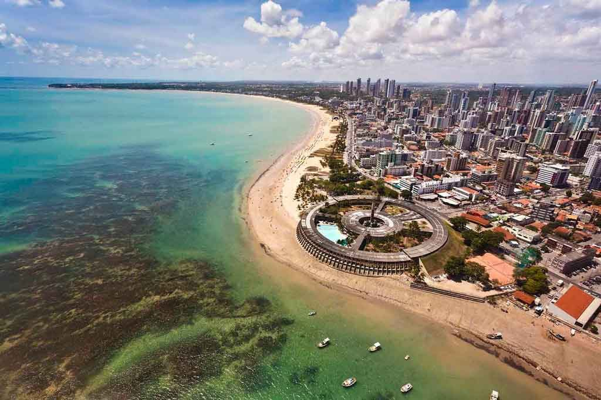
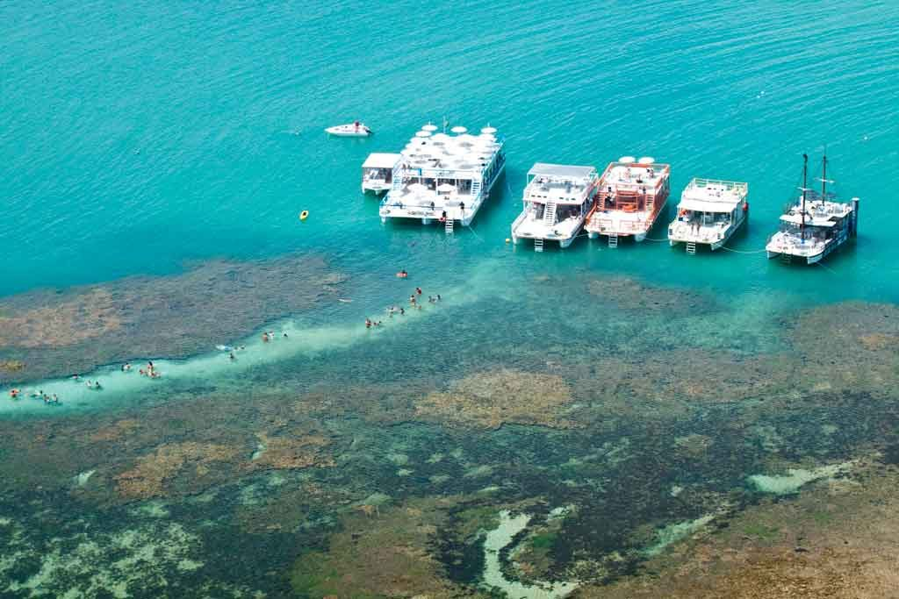
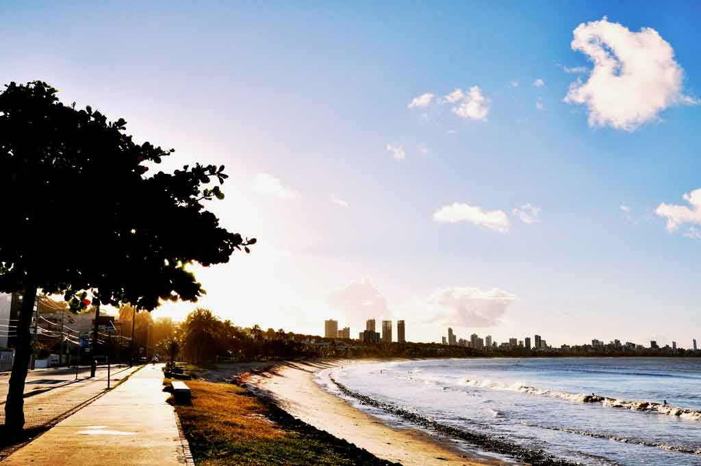
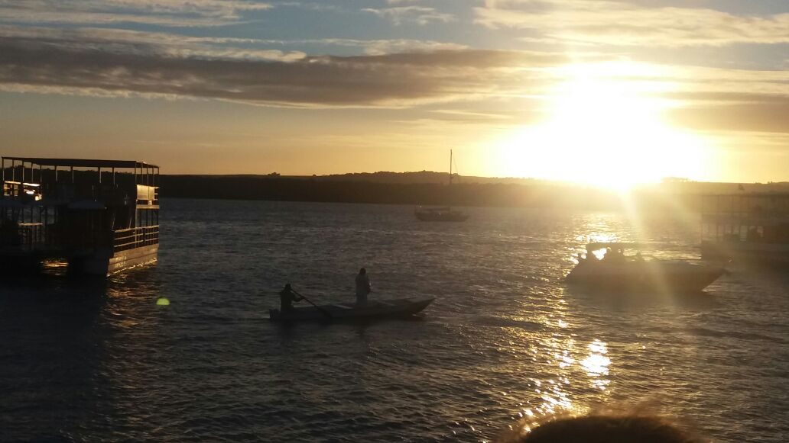
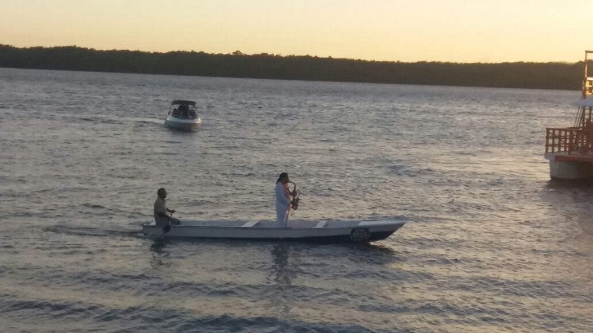
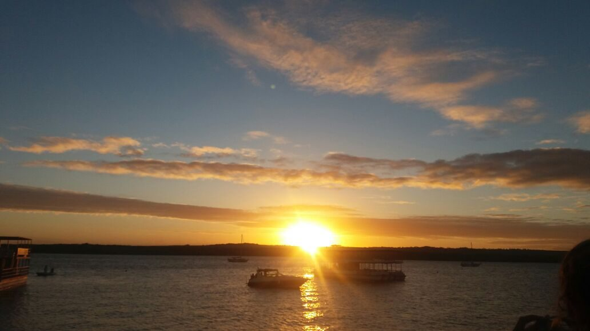
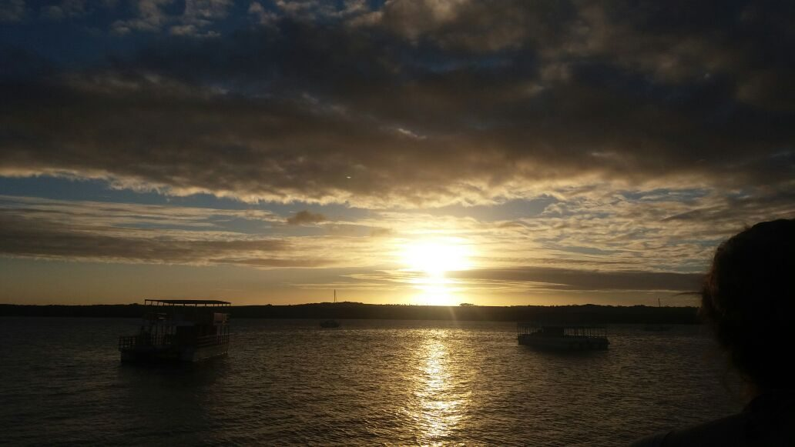

Onde o sol nasce primeiro nas Américas
João Pessoa, capital da Paraíba: praias de mar verde, recifes, muito verde e um centro histórico cheio de barroco.
Vídeo: João Pessoa de antigamente

Praias
Tambaú, Cabo Branco, Bessa, Manaíra e Gramame.

Pontos turísticos
Picãozinho, pôr do sol do Jacaré e o Centro Histórico.

Uma cidade com mais de 400 anos
João Pessoa nasceu como cidade em 5 de agosto de 1585 e é uma das mais antigas do Brasil. Este site é uma homenagem à capital paraibana, ao seu povo e ao seu litoral. O lema do brasão, “Intrepida ab origine”, quer dizer “intrépida desde a origem”.
Galeria





